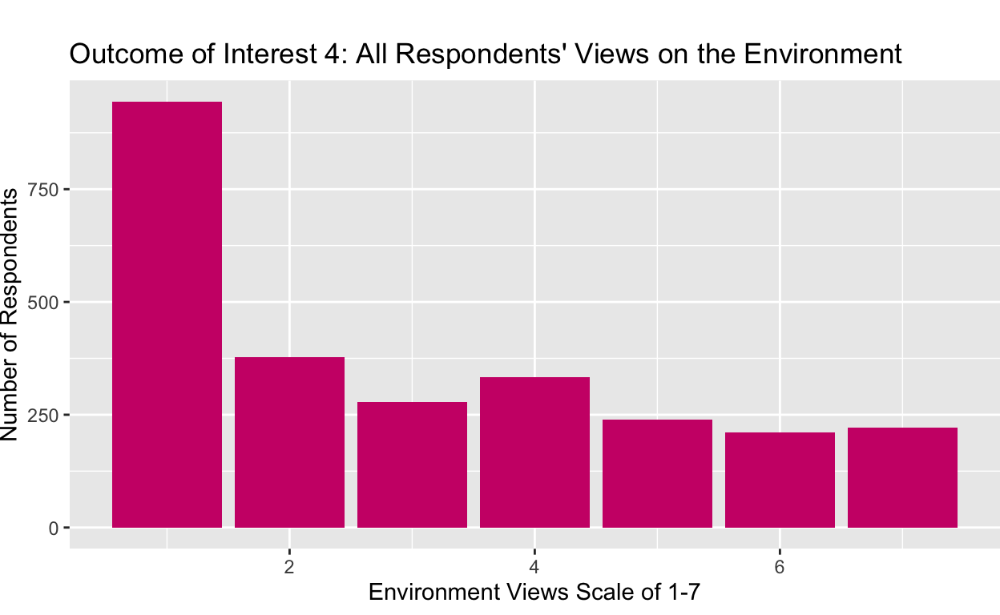

INTRODUCTION:
My research question is: “Do Democrat and Republican views on 5 major social issues differ by racial group?” My hypothesis is that yes, Democrat and Republican views on 5 major social issues will differ by racial group. For this project, the five key social issues I am investigating are abortion, LGBTQ+ rights, immigration, the environment, and the economy. The racial groups I am investigating are “White, non-Hispanic,” “Black, non-Hispanic,” “Hispanic,” “Asian or Native Hawaiian/other Pacific Islander, non-Hispanic,” and “Multiple races, non-Hispanic.” Additionally, I will use the two major parties, Democrats and Republicans, for my analysis. A lot of public opinion research collects respondents’ race, and responses are often analyzed through that lens. Given the history of racial polarization in the United States, analyzing different racial groups’ opinions can reveal interesting contrasts. However, I have not observed many analyses on racial differences within party groups. This is nonetheless significant, given that politicians spend considerable time targeting key racial demographics in elections. This analysis is particularly relevant given the upcoming presidential election in 2024. Additionally, the United States population is rapidly diversifying, so politicians will have no choice but to identify the needs and values of key racial demographic groups. Party players will no longer be able to take advantage of the fact that certain racial groups have historically voted for their party. I hope that my analysis will reveal nuances within party lines and across racial groups that may inspire more comprehensive research in this area.
**EXPLAIN THIS AND MY DATASET MORE
**EXPLAIN THAT DATASET DIDN'T INCLUDE EVERYTHING I WANTED
add a section called tidying and mutating data
change colors on dependent graphs
add lines at the bottom of my sections
show the main variable regression and multiple regressoins
add works cited
learn to bold section titles
**note that I changed my whole project from the milestonesDATA:
My data comes from the American National Election Studies 2020 Time Series study. This source is a public opinion survey of over 8,000 Americans in 2020 about a number of different topics. Party affiliation and race are self-reported in the survey.
I am measuring respondents’ views on my five key social issues based on the following survey questions.
Abortion Question: There has been some discussion about abortion during recent years. Which one of the opinions on this page best agrees with your view? Response options: 1 (By law, abortion should never be permitted) through 4 (By law, a woman should always be able to obtain an abortion as a matter of personal choice).
LGBTQ+ Rights Question: Which comes closest to your view [on gay marriage]? You can just tell me the number of your choice. Response options: 1 (Gay and lesbian couples should be allowed to legally marry) through 3 (There should be no legal recognition of gay or lesbian couples’ relationship).
Immigration Question: Which comes closest to your view about what government policy should be toward unauthorized immigrants now living in the United States? Response options: 1 (Make all unauthorized immigrants felons and send them back to their home country) through 4 (Allow unauthorized immigrants to remain in US & eventually qualify for citizenship without penalties).
Environment Question: Where would you place yourself on this scale, or haven’t you thought much about this? Response options: 1 (Tougher regulations on business needed to protect environment) through 7 (Regulations to protect environment already too much a burden on business).
Economy Question: What do you think about the state of the economy these days in the United States? Would you say the state of the economy is very good,good, neither good nor bad, bad, or very bad? Response options: 1(Very good) through 5 (Very bad).
While these categories may not entirely reflect of respondents’ views on a given issue, they offer a solid foundation to reveal potential differences by race and party.
The research design for this study is cross-sectional.
My dependent variable summaries are below, with barplots with the numbers of participants that responded to the survey in a given way for each social issue.
voting_trends_2020 <- read_csv("anes_timeseries_2020_csv_20220210.csv")
voting_trends_2020# A tibble: 8,280 × 1,771
version V200001 V160001_orig V200002 V200003 V200004 V200005
<chr> <dbl> <dbl> <dbl> <dbl> <dbl> <dbl>
1 ANES2020TimeS… 200015 401318 3 2 3 0
2 ANES2020TimeS… 200022 300261 3 2 3 0
3 ANES2020TimeS… 200039 400181 3 2 3 0
4 ANES2020TimeS… 200046 300171 3 2 3 0
5 ANES2020TimeS… 200053 405145 3 2 3 1
6 ANES2020TimeS… 200060 400374 3 2 3 0
7 ANES2020TimeS… 200084 407013 3 2 3 0
8 ANES2020TimeS… 200091 407174 3 2 3 0
9 ANES2020TimeS… 200107 406264 3 2 3 0
10 ANES2020TimeS… 200114 402782 3 2 3 1
# ℹ 8,270 more rows
# ℹ 1,764 more variables: V200006 <dbl>, V200007 <dbl>,
# V200008 <dbl>, V200009 <dbl>, V200010a <dbl>, V200010b <dbl>,
# V200010c <dbl>, V200010d <dbl>, V200011a <dbl>, V200011b <dbl>,
# V200011c <dbl>, V200011d <dbl>, V200012a <dbl>, V200012b <dbl>,
# V200012c <dbl>, V200012d <dbl>, V200013a <dbl>, V200013b <dbl>,
# V200013c <dbl>, V200013d <dbl>, V200014a <dbl>, V200014b <dbl>, …voting_trends_2020 <- voting_trends_2020 |>
select(V201549x, V201336, V201416, V201417, V201262, V201324, V201018, V201510, V201600) |>
filter(
V201549x >= 1,
V201018 == 1 | V201018 == 2,
V201336 %in% c(1,2,3,4),
V201416 >= 1,
V201417 >= 1,
V201262 %in% c(1, 2, 3, 4, 5, 6, 7),
V201324 >= 1,
V201510 %in% c(1, 2, 3, 4, 5, 6, 7, 8),
V201600 >= 1
)
voting_trends_2020# A tibble: 2,604 × 9
V201549x V201336 V201416 V201417 V201262 V201324 V201018 V201510
<dbl> <dbl> <dbl> <dbl> <dbl> <dbl> <dbl> <dbl>
1 3 2 3 1 7 2 2 6
2 4 1 1 1 1 4 2 4
3 3 1 3 3 1 4 1 2
4 1 4 1 3 3 3 1 6
5 3 4 1 3 3 4 2 7
6 3 3 1 3 2 5 1 1
7 1 4 1 3 1 4 1 6
8 1 2 3 3 6 2 1 1
9 1 4 1 3 1 4 2 8
10 3 4 1 3 4 4 1 2
# ℹ 2,594 more rows
# ℹ 1 more variable: V201600 <dbl>voting_trends <- voting_trends_2020 |>
rename(
race_num = V201549x,
abortion_views = V201336,
lgbtq_views = V201416,
immigration_views = V201417,
environment_views = V201262,
economy_views = V201324,
party = V201018,
education_level = V201510,
gender = V201600
) |>
mutate(
race = case_when(
race_num == 1 ~ "White, non-Hispanic",
race_num == 2 ~ "Black, non-Hispanic",
race_num == 3 ~ "Hispanic",
race_num == 4 ~ "Asian or Native Hawaiian/other Pacific Islander, non-Hispanic",
race_num == 5 ~ "Native American/Alaska Native or other race, non-Hispanic",
race_num == 6 ~ "Multiple races, non-Hispanic"
),
party = if_else(party == 1, "Democrat", "Republican"),
gender = if_else(gender == 1, "Male", "Female"),
education_level = case_when(
education_level == 1 ~ "Less than high school",
education_level == 2 ~ "High school graduate",
education_level == 3 ~ "Some college but no degree",
education_level == 4 ~ "Associate degree in college - vocational",
education_level == 5 ~ "Associate degree in college - academic",
education_level == 6 ~ "Bachelor's degree",
education_level == 7 ~ "Master's degree",
education_level == 8 ~ "Professional school degree/doctoral degree"
)
)
voting_trends# A tibble: 2,604 × 10
race_num abortion_views lgbtq_views immigration_views
<dbl> <dbl> <dbl> <dbl>
1 3 2 3 1
2 4 1 1 1
3 3 1 3 3
4 1 4 1 3
5 3 4 1 3
6 3 3 1 3
7 1 4 1 3
8 1 2 3 3
9 1 4 1 3
10 3 4 1 3
# ℹ 2,594 more rows
# ℹ 6 more variables: environment_views <dbl>, economy_views <dbl>,
# party <chr>, education_level <chr>, gender <chr>, race <chr>This Outcome of Interest 1 plot visualizes the counts of respondents who answered 1 - 4 when asked “There has been some discussion about abortion during recent years. Which one of the opinions on this page best agrees with your view?” This plot demonstrates that, regardless of party or race, most respondents chose 4 indicating that they do support a woman’s right to bodily autonomy.
voting_trends_dependent_abortion <- voting_trends |>
ggplot(mapping = aes(x = abortion_views)) +
geom_bar() +
labs(
x = "Abortion Views Scale of 1-4",
y = "Number of Respondents",
title = "Outcome of Interest 1: All Respondents' Views on Abortion"
)
voting_trends_dependent_abortion
This Outcome of Interest 2 plot visualizes the counts of respondents who answered 1 - 3 when asked “Which comes closest to your view [on gay marriage]?” This plot demonstrates that, regardless of party or race, most respondents chose 1 which suggests that they believe gay and lesbian couples should indeed be allowed to marry.
voting_trends_dependent_lgbtq <- voting_trends |>
ggplot(mapping = aes(x = lgbtq_views)) +
geom_bar() +
labs(
x = "Gay Marriage Views Scale of 1-3",
y = "Number of Respondents",
title = "Outcome of Interest 2: All Respondents' Views on Gay Marriage"
)
voting_trends_dependent_lgbtq
This Outcome of Interest 3 plot shows the number of respondents who answered 1 - 4 when asked “Which comes closest to your view about what government policy should be toward unauthorized immigrants now living in the United States?” This plot shows that, without our key independent variables of race and party, most respondents chose 3 which indicates that they believe the US should “Allow unauthorized immigrants to remain in US & eventually qualify for citizenship but only if they meet requirements.”
voting_trends_dependent_immigration <- voting_trends |>
ggplot(mapping = aes(x = immigration_views)) +
geom_bar() +
labs(
x = "Immigration Views Scale of 1-4",
y = "Number of Respondents",
title = "Outcome of Interest 3: All Respondents' Views on Immigration"
)
voting_trends_dependent_immigration
This Outcome of Interest 4 plot shows the number of respondents who answered 1 - 7 when asked “Where would you place yourself on this scale, or haven’t you thought much about this?” when asked about the tradeoff between supporting the environment and supporting businesses. This plot shows that, without our key independent variables of race and party, most respondents chose 1 which shows they believe that “Tougher regulations on business [are] needed to protect environment.”
voting_trends_dependent_environment <- voting_trends |>
ggplot(mapping = aes(x = environment_views)) +
geom_bar() +
labs(
x = "Environment Views Scale of 1-7",
y = "Number of Respondents",
title = "Outcome of Interest 4: All Respondents' Views on the Environment"
)
voting_trends_dependent_environment
Finally, this Outcome of Interest 5 plot depicts the number of respondents who answered 1 - 5 when asked “What do you think about the state of the economy these days in the United States? Would you say the state of the economy is very good,good, neither good nor bad, bad, or very bad?” This plot shows that answers ranged widely, but most respondents chose 4 regardless of race or party, which shows that they believe the current state of economy is “bad.” Note that this survey was taken in 2020 during a time of significant social and economic turmoil in the United States (and the world) due to the COVID-19 pandemic and racial tensions.
voting_trends_dependent_economy <- voting_trends |>
ggplot(mapping = aes(x = economy_views)) +
geom_bar() +
labs(
x = "Economy Views Scale of 1-5",
y = "Number of Respondents",
title = "Outcome of Interest 5: All Respondents' Views on the Economy"
)
voting_trends_dependent_economy
library(patchwork)
(voting_trends_dependent_abortion)+(voting_trends_dependent_economy)+(voting_trends_dependent_environment)+(voting_trends_dependent_immigration)+(voting_trends_dependent_lgbtq)
RESULTS:
My results include a table and bar plots of respondents’ average views on abortion by party and racial group, as well as regressions of of each social issue with race, party, and the confounders of education level and gender.
voting_tibble <- voting_trends |>
group_by(party, race) |>
summarize(
avg_abortion = mean(abortion_views),
avg_lgbtq = mean(lgbtq_views),
avg_immigration = mean(immigration_views),
avg_environment = mean(environment_views),
avg_economy = mean(economy_views)
)
knitr::kable(voting_tibble,
col.names = c("Party Affiliation", "Race", "Views on Abortion", "Views on Gay Marriage", "Views on Immigration", "Views on the Environment", "Views on the Economy"))| Party Affiliation | Race | Views on Abortion | Views on Gay Marriage | Views on Immigration | Views on the Environment | Views on the Economy |
|---|---|---|---|---|---|---|
| Democrat | Asian or Native Hawaiian/other Pacific Islander, non-Hispanic | 3.746269 | 1.149254 | 2.970149 | 2.477612 | 3.492537 |
| Democrat | Black, non-Hispanic | 3.504951 | 1.470297 | 2.930693 | 2.391089 | 3.811881 |
| Democrat | Hispanic | 3.364197 | 1.296296 | 3.179012 | 1.956790 | 3.827161 |
| Democrat | Multiple races, non-Hispanic | 3.672414 | 1.120690 | 3.086207 | 1.758621 | 3.913793 |
| Democrat | Native American/Alaska Native or other race, non-Hispanic | 3.476190 | 1.095238 | 3.333333 | 2.047619 | 4.142857 |
| Democrat | White, non-Hispanic | 3.680193 | 1.132367 | 3.181643 | 1.938164 | 3.806763 |
| Republican | Asian or Native Hawaiian/other Pacific Islander, non-Hispanic | 2.608696 | 1.956522 | 2.478261 | 3.956522 | 3.304348 |
| Republican | Black, non-Hispanic | 1.666667 | 2.333333 | 2.333333 | 4.333333 | 2.833333 |
| Republican | Hispanic | 2.450000 | 1.733333 | 2.383333 | 4.483333 | 2.583333 |
| Republican | Multiple races, non-Hispanic | 2.480000 | 1.680000 | 2.160000 | 4.320000 | 2.960000 |
| Republican | Native American/Alaska Native or other race, non-Hispanic | 2.500000 | 1.636364 | 2.318182 | 4.454546 | 2.318182 |
| Republican | White, non-Hispanic | 2.498375 | 1.713976 | 2.358613 | 4.514626 | 2.553629 |
Analysis Plot 1 shows respondents’ average views on abortion for each party by racial group and party. COME BACK AND EXPLAIN EACH OF THESE.
abortion_plot <- voting_tibble |>
ggplot(mapping = aes(x = party, y = avg_abortion, fill = race)) +
geom_col(position = "dodge") +
labs(x = "Party Affiliation",
y = "Average Views on Abortion",
title = "Analysis Plot 1: Average Views on Abortion by Party Affiliation and Racial Group")
abortion_plot
Analysis Plot 2 shows respondents’ average views on gay marriage for each party by racial group and party.
lgbtq_plot <- voting_tibble |>
ggplot(mapping = aes(x = party, y = avg_lgbtq, fill = race)) +
geom_col(position = "dodge") +
labs(x = "Party Affiliation",
y = "Average Views on Gay Marriage",
title = "Analysis Plot 2: Average Views on Gay Marriage by Party Affiliation and Racial Group")
lgbtq_plot
Analysis Plot 3 shows respondents’ average views on immigration for each party by racial group and party.
immigration_plot <- voting_tibble |>
ggplot(mapping = aes(x = party, y = avg_immigration, fill = race)) +
geom_col(position = "dodge") +
labs(x = "Party Affiliation",
y = "Average Views on Immigration",
title = "Analysis Plot 3: Average Views on Immigration by Party Affiliation and Racial Group")
immigration_plot
Analysis Plot 4 shows respondents’ average views on the environment for each party by racial group and party.
environment_plot <- voting_tibble |>
ggplot(mapping = aes(x = party, y = avg_environment, fill = race)) +
geom_col(position = "dodge") +
labs(x = "Party Affiliation",
y = "Average Views on the Environment",
title = "Analysis Plot 4: Average Views on the Environment by Party Affiliation and Racial Group")
environment_plot
Analysis Plot 5 shows respondents’ average views on the economy for each party by racial group and party.
economy_plot <- voting_tibble |>
ggplot(mapping = aes(x = party, y = avg_economy, fill = race)) +
geom_col(position = "dodge") +
labs(x = "Party Affiliation",
y = "Average Views on the Economy",
title = "Analysis Plot 5: Average Views on the Economy by Party Affiliation and Racial Group")
economy_plot
This regression shows abortion views against the main independent variables race and party, as well as confounders of education level and gender. The intercept coefficient here 3.73723 shows the average view of Asian American Democrats with an academic Associate’s degree who are women on the issue of abortion. You can find the other average view values by comparing the coefficient for each racial group to this one. Since I am mainly looking at party and race, I will outline those key outcomes while controlling for education (bachelor’s degree) and gender here.
The average view of Black Democrats with a bachelor’s degree who are women is 3.60258. For men, it’s 3.57298. Women - sum(3.73723 asian + 0.03998 bachelor + -0.17463 black race) Men - sum((3.73723 asian + 0.03998 bachelor + -0.17463 black race + -0.02960 men)
The average view of Black Republicans with a bachelor’s degree who are women is 2.47573. For men, it’s Women - sum(3.73723 asian + 0.03998 bachelor + -0.17463 black race + -1.12685 republican)
**not sure if i did education correctly. do i just add in another level of education?sum(3.73723 + 0.03998 + -1.12685 + -0.17463)[1] 2.47573The average view of Black Democrats while controlling for education and gender is BLANK. (remove the associates degree and gender, add race) - remove gender - remove education - add black race - add democrat party if I remove all that, i’ll just have what I did in my chart won’t I? Isn’t the point of doing the regression to include the confounders? i just won’t include all educational levels then. black dems 3.5 on average not controlling for other factors
Average view of Black Democrats with a bachelor’s degree who are women is blank. Average view of bla bla men is blank.
The average view of Black Republicans is BLANK
The average view of Hispanic Democrats is BLANK. The average view of Hispanic Republicans is BLANK. The average view of multiracial Democrats is BLANK. The average view of multiracial Republicans is BLANK. The average view of Native American Democrats is BLANK. The average view of Native American Republicans is BLANK. The average view of White Democrats is BLANK. Finally, the average view of white Republicans is BLANK
this is statistically significant
look at the prt thing to see if it’s statistically significant
abortion_regression <- lm(abortion_views ~ race + party + education_level + gender, data = voting_trends)
summary(abortion_regression)
Call:
lm(formula = abortion_views ~ race + party + education_level +
gender, data = voting_trends)
Residuals:
Min 1Q Median 3Q Max
-2.8199 -0.5612 0.2720 0.4374 1.9604
Coefficients:
Estimate
(Intercept) 3.73723
raceBlack, non-Hispanic -0.17463
raceHispanic -0.22907
raceMultiple races, non-Hispanic -0.05347
raceNative American/Alaska Native or other race, non-Hispanic -0.15090
raceWhite, non-Hispanic -0.04917
partyRepublican -1.12685
education_levelAssociate degree in college - vocational -0.16301
education_levelBachelor's degree 0.03998
education_levelHigh school graduate -0.25394
education_levelLess than high school -0.34167
education_levelMaster's degree 0.10137
education_levelProfessional school degree/doctoral degree 0.16145
education_levelSome college but no degree -0.05952
genderMale -0.02960
Std. Error
(Intercept) 0.11912
raceBlack, non-Hispanic 0.11246
raceHispanic 0.11082
raceMultiple races, non-Hispanic 0.13414
raceNative American/Alaska Native or other race, non-Hispanic 0.16368
raceWhite, non-Hispanic 0.09541
partyRepublican 0.03715
education_levelAssociate degree in college - vocational 0.09808
education_levelBachelor's degree 0.07778
education_levelHigh school graduate 0.08558
education_levelLess than high school 0.11691
education_levelMaster's degree 0.08280
education_levelProfessional school degree/doctoral degree 0.09837
education_levelSome college but no degree 0.08093
genderMale 0.03502
t value
(Intercept) 31.375
raceBlack, non-Hispanic -1.553
raceHispanic -2.067
raceMultiple races, non-Hispanic -0.399
raceNative American/Alaska Native or other race, non-Hispanic -0.922
raceWhite, non-Hispanic -0.515
partyRepublican -30.335
education_levelAssociate degree in college - vocational -1.662
education_levelBachelor's degree 0.514
education_levelHigh school graduate -2.967
education_levelLess than high school -2.923
education_levelMaster's degree 1.224
education_levelProfessional school degree/doctoral degree 1.641
education_levelSome college but no degree -0.736
genderMale -0.845
Pr(>|t|)
(Intercept) < 2e-16
raceBlack, non-Hispanic 0.12058
raceHispanic 0.03883
raceMultiple races, non-Hispanic 0.69023
raceNative American/Alaska Native or other race, non-Hispanic 0.35666
raceWhite, non-Hispanic 0.60635
partyRepublican < 2e-16
education_levelAssociate degree in college - vocational 0.09662
education_levelBachelor's degree 0.60727
education_levelHigh school graduate 0.00303
education_levelLess than high school 0.00350
education_levelMaster's degree 0.22095
education_levelProfessional school degree/doctoral degree 0.10086
education_levelSome college but no degree 0.46208
genderMale 0.39804
(Intercept) ***
raceBlack, non-Hispanic
raceHispanic *
raceMultiple races, non-Hispanic
raceNative American/Alaska Native or other race, non-Hispanic
raceWhite, non-Hispanic
partyRepublican ***
education_levelAssociate degree in college - vocational .
education_levelBachelor's degree
education_levelHigh school graduate **
education_levelLess than high school **
education_levelMaster's degree
education_levelProfessional school degree/doctoral degree
education_levelSome college but no degree
genderMale
---
Signif. codes: 0 '***' 0.001 '**' 0.01 '*' 0.05 '.' 0.1 ' ' 1
Residual standard error: 0.8791 on 2589 degrees of freedom
Multiple R-squared: 0.3021, Adjusted R-squared: 0.2983
F-statistic: 80.04 on 14 and 2589 DF, p-value: < 2.2e-16lgbtq_regression <- lm(lgbtq_views ~ race + party + education_level + gender, data = voting_trends)
summary(lgbtq_regression)
Call:
lm(formula = lgbtq_views ~ race + party + education_level + gender,
data = voting_trends)
Residuals:
Min 1Q Median 3Q Max
-1.0939 -0.3799 -0.1202 0.2715 1.9243
Coefficients:
Estimate
(Intercept) 1.21249
raceBlack, non-Hispanic 0.21181
raceHispanic -0.01518
raceMultiple races, non-Hispanic -0.11834
raceNative American/Alaska Native or other race, non-Hispanic -0.15016
raceWhite, non-Hispanic -0.09231
partyRepublican 0.55353
education_levelAssociate degree in college - vocational 0.03167
education_levelBachelor's degree -0.04446
education_levelHigh school graduate 0.13611
education_levelLess than high school 0.34308
education_levelMaster's degree -0.09501
education_levelProfessional school degree/doctoral degree -0.03785
education_levelSome college but no degree 0.02992
genderMale 0.05474
Std. Error
(Intercept) 0.08254
raceBlack, non-Hispanic 0.07792
raceHispanic 0.07679
raceMultiple races, non-Hispanic 0.09295
raceNative American/Alaska Native or other race, non-Hispanic 0.11341
raceWhite, non-Hispanic 0.06611
partyRepublican 0.02574
education_levelAssociate degree in college - vocational 0.06796
education_levelBachelor's degree 0.05389
education_levelHigh school graduate 0.05930
education_levelLess than high school 0.08101
education_levelMaster's degree 0.05737
education_levelProfessional school degree/doctoral degree 0.06816
education_levelSome college but no degree 0.05607
genderMale 0.02427
t value
(Intercept) 14.690
raceBlack, non-Hispanic 2.718
raceHispanic -0.198
raceMultiple races, non-Hispanic -1.273
raceNative American/Alaska Native or other race, non-Hispanic -1.324
raceWhite, non-Hispanic -1.396
partyRepublican 21.506
education_levelAssociate degree in college - vocational 0.466
education_levelBachelor's degree -0.825
education_levelHigh school graduate 2.295
education_levelLess than high school 4.235
education_levelMaster's degree -1.656
education_levelProfessional school degree/doctoral degree -0.555
education_levelSome college but no degree 0.534
genderMale 2.256
Pr(>|t|)
(Intercept) < 2e-16
raceBlack, non-Hispanic 0.00661
raceHispanic 0.84333
raceMultiple races, non-Hispanic 0.20307
raceNative American/Alaska Native or other race, non-Hispanic 0.18563
raceWhite, non-Hispanic 0.16277
partyRepublican < 2e-16
education_levelAssociate degree in college - vocational 0.64128
education_levelBachelor's degree 0.40952
education_levelHigh school graduate 0.02179
education_levelLess than high school 2.36e-05
education_levelMaster's degree 0.09784
education_levelProfessional school degree/doctoral degree 0.57878
education_levelSome college but no degree 0.59369
genderMale 0.02418
(Intercept) ***
raceBlack, non-Hispanic **
raceHispanic
raceMultiple races, non-Hispanic
raceNative American/Alaska Native or other race, non-Hispanic
raceWhite, non-Hispanic
partyRepublican ***
education_levelAssociate degree in college - vocational
education_levelBachelor's degree
education_levelHigh school graduate *
education_levelLess than high school ***
education_levelMaster's degree .
education_levelProfessional school degree/doctoral degree
education_levelSome college but no degree
genderMale *
---
Signif. codes: 0 '***' 0.001 '**' 0.01 '*' 0.05 '.' 0.1 ' ' 1
Residual standard error: 0.6091 on 2589 degrees of freedom
Multiple R-squared: 0.188, Adjusted R-squared: 0.1836
F-statistic: 42.81 on 14 and 2589 DF, p-value: < 2.2e-16unique(voting_tibble$race)[1] "Asian or Native Hawaiian/other Pacific Islander, non-Hispanic"
[2] "Black, non-Hispanic"
[3] "Hispanic"
[4] "Multiple races, non-Hispanic"
[5] "Native American/Alaska Native or other race, non-Hispanic"
[6] "White, non-Hispanic" immigration_regression <- lm(immigration_views ~ race + party + education_level + gender, data = voting_trends)
summary(immigration_regression)
Call:
lm(formula = immigration_views ~ race + party + education_level +
gender, data = voting_trends)
Residuals:
Min 1Q Median 3Q Max
-2.42117 -0.31790 -0.06725 0.65940 2.09262
Coefficients:
Estimate
(Intercept) 2.99694
raceBlack, non-Hispanic -0.02598
raceHispanic 0.22240
raceMultiple races, non-Hispanic 0.03378
raceNative American/Alaska Native or other race, non-Hispanic 0.21084
raceWhite, non-Hispanic 0.15323
partyRepublican -0.77034
education_levelAssociate degree in college - vocational -0.07751
education_levelBachelor's degree 0.09630
education_levelHigh school graduate -0.19278
education_levelLess than high school -0.27244
education_levelMaster's degree 0.16773
education_levelProfessional school degree/doctoral degree 0.27100
education_levelSome college but no degree 0.01044
genderMale -0.08057
Std. Error
(Intercept) 0.10573
raceBlack, non-Hispanic 0.09982
raceHispanic 0.09837
raceMultiple races, non-Hispanic 0.11906
raceNative American/Alaska Native or other race, non-Hispanic 0.14528
raceWhite, non-Hispanic 0.08469
partyRepublican 0.03297
education_levelAssociate degree in college - vocational 0.08705
education_levelBachelor's degree 0.06904
education_levelHigh school graduate 0.07596
education_levelLess than high school 0.10377
education_levelMaster's degree 0.07349
education_levelProfessional school degree/doctoral degree 0.08731
education_levelSome college but no degree 0.07183
genderMale 0.03109
t value
(Intercept) 28.346
raceBlack, non-Hispanic -0.260
raceHispanic 2.261
raceMultiple races, non-Hispanic 0.284
raceNative American/Alaska Native or other race, non-Hispanic 1.451
raceWhite, non-Hispanic 1.809
partyRepublican -23.364
education_levelAssociate degree in college - vocational -0.890
education_levelBachelor's degree 1.395
education_levelHigh school graduate -2.538
education_levelLess than high school -2.625
education_levelMaster's degree 2.282
education_levelProfessional school degree/doctoral degree 3.104
education_levelSome college but no degree 0.145
genderMale -2.592
Pr(>|t|)
(Intercept) < 2e-16
raceBlack, non-Hispanic 0.79467
raceHispanic 0.02385
raceMultiple races, non-Hispanic 0.77665
raceNative American/Alaska Native or other race, non-Hispanic 0.14682
raceWhite, non-Hispanic 0.07051
partyRepublican < 2e-16
education_levelAssociate degree in college - vocational 0.37333
education_levelBachelor's degree 0.16316
education_levelHigh school graduate 0.01121
education_levelLess than high school 0.00871
education_levelMaster's degree 0.02255
education_levelProfessional school degree/doctoral degree 0.00193
education_levelSome college but no degree 0.88443
genderMale 0.00961
(Intercept) ***
raceBlack, non-Hispanic
raceHispanic *
raceMultiple races, non-Hispanic
raceNative American/Alaska Native or other race, non-Hispanic
raceWhite, non-Hispanic .
partyRepublican ***
education_levelAssociate degree in college - vocational
education_levelBachelor's degree
education_levelHigh school graduate *
education_levelLess than high school **
education_levelMaster's degree *
education_levelProfessional school degree/doctoral degree **
education_levelSome college but no degree
genderMale **
---
Signif. codes: 0 '***' 0.001 '**' 0.01 '*' 0.05 '.' 0.1 ' ' 1
Residual standard error: 0.7803 on 2589 degrees of freedom
Multiple R-squared: 0.2203, Adjusted R-squared: 0.2161
F-statistic: 52.27 on 14 and 2589 DF, p-value: < 2.2e-16environment_regression <- lm(environment_views ~ race + party + education_level + gender, data = voting_trends)
summary(environment_regression)
Call:
lm(formula = environment_views ~ race + party + education_level +
gender, data = voting_trends)
Residuals:
Min 1Q Median 3Q Max
-4.2525 -0.9862 -0.3395 1.1233 5.2044
Coefficients:
Estimate
(Intercept) 2.21809
raceBlack, non-Hispanic 0.09706
raceHispanic -0.33129
raceMultiple races, non-Hispanic -0.45617
raceNative American/Alaska Native or other race, non-Hispanic -0.24156
raceWhite, non-Hispanic -0.25061
partyRepublican 2.43132
education_levelAssociate degree in college - vocational 0.07664
education_levelBachelor's degree -0.17187
education_levelHigh school graduate 0.23106
education_levelLess than high school -0.07726
education_levelMaster's degree -0.35556
education_levelProfessional school degree/doctoral degree -0.45996
education_levelSome college but no degree -0.09073
genderMale 0.37204
Std. Error
(Intercept) 0.21984
raceBlack, non-Hispanic 0.20755
raceHispanic 0.20454
raceMultiple races, non-Hispanic 0.24757
raceNative American/Alaska Native or other race, non-Hispanic 0.30208
raceWhite, non-Hispanic 0.17609
partyRepublican 0.06856
education_levelAssociate degree in college - vocational 0.18101
education_levelBachelor's degree 0.14355
education_levelHigh school graduate 0.15794
education_levelLess than high school 0.21577
education_levelMaster's degree 0.15281
education_levelProfessional school degree/doctoral degree 0.18155
education_levelSome college but no degree 0.14936
genderMale 0.06464
t value
(Intercept) 10.090
raceBlack, non-Hispanic 0.468
raceHispanic -1.620
raceMultiple races, non-Hispanic -1.843
raceNative American/Alaska Native or other race, non-Hispanic -0.800
raceWhite, non-Hispanic -1.423
partyRepublican 35.464
education_levelAssociate degree in college - vocational 0.423
education_levelBachelor's degree -1.197
education_levelHigh school graduate 1.463
education_levelLess than high school -0.358
education_levelMaster's degree -2.327
education_levelProfessional school degree/doctoral degree -2.533
education_levelSome college but no degree -0.607
genderMale 5.756
Pr(>|t|)
(Intercept) < 2e-16
raceBlack, non-Hispanic 0.6401
raceHispanic 0.1054
raceMultiple races, non-Hispanic 0.0655
raceNative American/Alaska Native or other race, non-Hispanic 0.4240
raceWhite, non-Hispanic 0.1548
partyRepublican < 2e-16
education_levelAssociate degree in college - vocational 0.6721
education_levelBachelor's degree 0.2313
education_levelHigh school graduate 0.1436
education_levelLess than high school 0.7203
education_levelMaster's degree 0.0201
education_levelProfessional school degree/doctoral degree 0.0114
education_levelSome college but no degree 0.5436
genderMale 9.64e-09
(Intercept) ***
raceBlack, non-Hispanic
raceHispanic
raceMultiple races, non-Hispanic .
raceNative American/Alaska Native or other race, non-Hispanic
raceWhite, non-Hispanic
partyRepublican ***
education_levelAssociate degree in college - vocational
education_levelBachelor's degree
education_levelHigh school graduate
education_levelLess than high school
education_levelMaster's degree *
education_levelProfessional school degree/doctoral degree *
education_levelSome college but no degree
genderMale ***
---
Signif. codes: 0 '***' 0.001 '**' 0.01 '*' 0.05 '.' 0.1 ' ' 1
Residual standard error: 1.622 on 2589 degrees of freedom
Multiple R-squared: 0.3737, Adjusted R-squared: 0.3703
F-statistic: 110.4 on 14 and 2589 DF, p-value: < 2.2e-16economy_regression <- lm(economy_views ~ race + party + education_level + gender, data = voting_trends)
summary(economy_regression)
Call:
lm(formula = economy_views ~ race + party + education_level +
gender, data = voting_trends)
Residuals:
Min 1Q Median 3Q Max
-3.0364 -0.6671 0.1486 0.5244 2.6373
Coefficients:
Estimate
(Intercept) 3.830490
raceBlack, non-Hispanic 0.111563
raceHispanic 0.113443
raceMultiple races, non-Hispanic 0.255454
raceNative American/Alaska Native or other race, non-Hispanic 0.084659
raceWhite, non-Hispanic 0.044849
partyRepublican -1.184365
education_levelAssociate degree in college - vocational -0.066996
education_levelBachelor's degree -0.023916
education_levelHigh school graduate -0.235511
education_levelLess than high school -0.220890
education_levelMaster's degree -0.005463
education_levelProfessional school degree/doctoral degree 0.161052
education_levelSome college but no degree -0.122644
genderMale -0.092731
Std. Error
(Intercept) 0.133616
raceBlack, non-Hispanic 0.126147
raceHispanic 0.124315
raceMultiple races, non-Hispanic 0.150470
raceNative American/Alaska Native or other race, non-Hispanic 0.183601
raceWhite, non-Hispanic 0.107028
partyRepublican 0.041668
education_levelAssociate degree in college - vocational 0.110016
education_levelBachelor's degree 0.087248
education_levelHigh school graduate 0.095995
education_levelLess than high school 0.131142
education_levelMaster's degree 0.092876
education_levelProfessional school degree/doctoral degree 0.110345
education_levelSome college but no degree 0.090777
genderMale 0.039287
t value
(Intercept) 28.668
raceBlack, non-Hispanic 0.884
raceHispanic 0.913
raceMultiple races, non-Hispanic 1.698
raceNative American/Alaska Native or other race, non-Hispanic 0.461
raceWhite, non-Hispanic 0.419
partyRepublican -28.424
education_levelAssociate degree in college - vocational -0.609
education_levelBachelor's degree -0.274
education_levelHigh school graduate -2.453
education_levelLess than high school -1.684
education_levelMaster's degree -0.059
education_levelProfessional school degree/doctoral degree 1.460
education_levelSome college but no degree -1.351
genderMale -2.360
Pr(>|t|)
(Intercept) <2e-16
raceBlack, non-Hispanic 0.3766
raceHispanic 0.3616
raceMultiple races, non-Hispanic 0.0897
raceNative American/Alaska Native or other race, non-Hispanic 0.6448
raceWhite, non-Hispanic 0.6752
partyRepublican <2e-16
education_levelAssociate degree in college - vocational 0.5426
education_levelBachelor's degree 0.7840
education_levelHigh school graduate 0.0142
education_levelLess than high school 0.0922
education_levelMaster's degree 0.9531
education_levelProfessional school degree/doctoral degree 0.1445
education_levelSome college but no degree 0.1768
genderMale 0.0183
(Intercept) ***
raceBlack, non-Hispanic
raceHispanic
raceMultiple races, non-Hispanic .
raceNative American/Alaska Native or other race, non-Hispanic
raceWhite, non-Hispanic
partyRepublican ***
education_levelAssociate degree in college - vocational
education_levelBachelor's degree
education_levelHigh school graduate *
education_levelLess than high school .
education_levelMaster's degree
education_levelProfessional school degree/doctoral degree
education_levelSome college but no degree
genderMale *
---
Signif. codes: 0 '***' 0.001 '**' 0.01 '*' 0.05 '.' 0.1 ' ' 1
Residual standard error: 0.9861 on 2589 degrees of freedom
Multiple R-squared: 0.28, Adjusted R-squared: 0.2761
F-statistic: 71.91 on 14 and 2589 DF, p-value: < 2.2e-16CONCLUSION:
American National Election Studies. 2021. ANES 2020 Time Series Study Full Release [dataset and documentation]. July 19, 2021 version. www.electionstudies.org